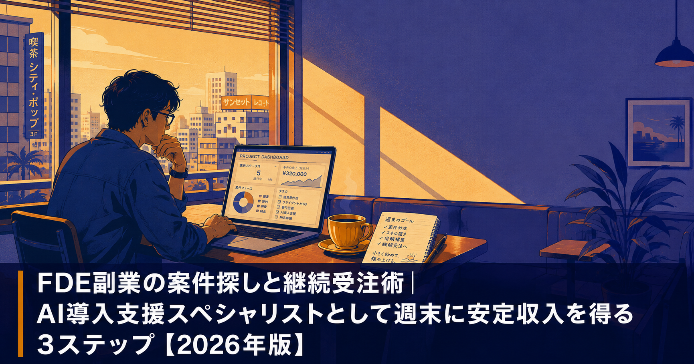
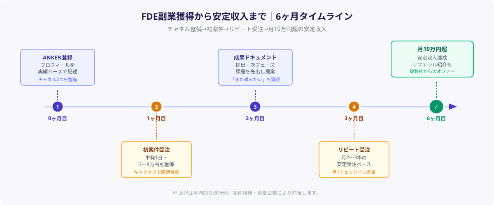
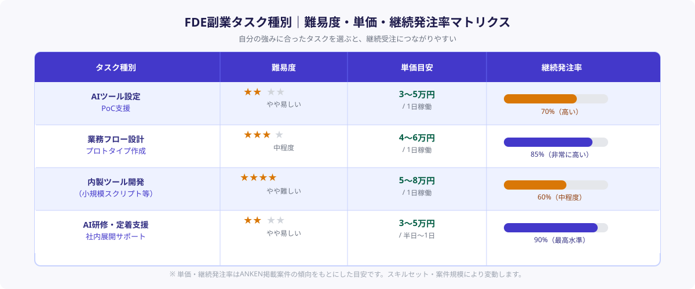

FDE副業の案件探しと継続受注術｜AI導入支援スペシャリストとして週末に安定収入を得る3ステップ【2026年版】
FDE（フォワード・デプロイド・エンジニア）として副業案件を獲得し継続受注で安定収入を得る最短ルートは「案件獲得チャネルを3つ持つ」「初回稼働で成果ドキュメントを渡す」「次フェーズ提案を習慣化する」の3つだ。2026年時点で国内のFDE需要は急増しており、週1〜2日の稼働でも月5〜15万円の副業収入を得るエンジニアが増えている。本記事ではFDE副業未経験者でも再現できる案件探しから継続受注までの3ステップを具体的に解説する。
本記事は2026年8月時点の情報に基づいています。
まずは案件を見るだけでも大丈夫です。
ANKENには週末・土日スポットのFDE副業案件が毎日更新されています。何から手をつければいいか分からない段階でも、まず登録するだけでOKです。しつこい営業は一切ありません。
エンジニア登録して案件を見る（無料）FDE副業案件が増えている背景

2026年、企業のAI導入は「検討フェーズ」から「現場定着フェーズ」へと移行しつつある。だが現実には、社内にAIツールを設定・運用し、現場スタッフに使わせ続けるための人材が慢性的に不足している。この「最後の1マイル」を担うFDEへの需要が、ここ1〜2年で急速に高まっている理由だ。
特にANKENへの発注企業からの問い合わせを見ると、「ChatGPT/Claudeの社内実装を手伝える人を週1〜2日だけ欲しい」「PoCは終わったが現場に広めるための人手がない」という要望が目立つ。要するに、「社内にFDEを採用するほどではないが、FDE的な機能がスポットで欲しい」という中小・中堅企業のニーズが副業案件として流通するようになってきた。
エンジニア側から見れば、FDE副業には3つの大きなメリットがある。①本業よりも高い時給水準（時給3,000〜7,000円）、②AIスキルを実案件で磨けるスキルアップ効果、③複数社の現場を同時に経験することによる視野拡大だ。特に「AIツール活用力」は実案件を繰り返すことで急速に向上するため、副業をしながら本業評価も高まるという好循環が生まれやすい。
一方で「どうやって案件を見つけるか」「初回で信頼を勝ち取るにはどうすればいいか」「一度の受注を継続案件にするコツは」という悩みは多い。次のSTEPではこの3点を具体的に解説する。
STEP 1｜案件獲得チャネルを3つ確保する
FDE副業で安定収入を得るうえで最大のリスクは「案件の途絶」だ。1つのチャネルだけに依存すると、発注企業の予算都合や繁忙期などで案件が止まったとき収入がゼロになる。3つのチャネルを並行して整備しておくことが安定稼働の基本になる。
① ANKENなどのFDE特化マッチングサービスを活用する
最も効率的な案件獲得チャネルは、FDE・AI導入支援に特化したスポット副業マッチングサービスの利用だ。ANKENでは、週1〜土日・タスク単位のFDE副業案件が毎日更新されており、プロフィールを登録するだけで企業側からオファーが届く仕組みになっている。
プロフィール設定で重要なのは「何ができるか」よりも「どんな課題を解決したことがあるか」を具体的に書くことだ。「ChatGPTを使った業務自動化の設計・実装」という表現よりも、「経理部門の請求書照合業務をClaude APIで自動化し、月40時間の工数を削減した（toB・SaaS系スタートアップ）」という実績ベースの記述の方が、発注企業の目に止まりやすい。
② 本業ネットワーク経由のスポット提案
意外に成約率が高いのが、本業を通じて知り合った企業・知人へのスポット提案だ。本業のクライアント先や協力会社の担当者から「AIの件、ちょっと相談したいんだけど」という声が上がることは珍しくない。このとき「コンサルとして正式に契約するほどではなく、週末に1〜2日手伝ってもらう形でいい」という形に落とし込めると、双方にとってハードルが下がる。
ただし本業との利益相反・競業禁止規定には注意が必要だ。基本的に「本業と業種が重複しない企業」へのスポット支援に絞ることを推奨する。ANKENのようなマッチングサービス経由であれば、契約形態上「スポット協力先」として整理しやすい。
③ 副業エージェント・SNSプロフィールによる受け身の導線
上記2つのアクティブなチャネルに加えて、「探される側」の仕組みも整えておきたい。LinkedInやX（旧Twitter）のプロフィールに「FDE・AI導入支援・スポット副業受付中」と明記し、ポートフォリオやGitHubへのリンクを添えておくだけで、月に1〜2件の打診が来るようになることがある。副業エージェントサービスへの登録も同様の受け身チャネルとして有効だ。
3つのチャネルが機能しはじめると、「今月はANKENからの案件1本＋本業ネットワーク1本」という形で月2〜3本の受注ベースが整い、月5〜10万円の安定収入につながる。
STEP 2｜初回受注で「また頼みたい」を引き出す実践術

FDE副業において最もレバレッジが高いのは「1回の案件をリピートにつなげること」だ。新規案件獲得にかかる時間・労力は、既存クライアントからの追加受注の5〜10倍になる。初回受注でどれだけ「また頼みたい」を引き出せるかが、安定収入の分岐点になる。
① キックオフヒアリングで課題を言語化・合意する
初回稼働前に必ず「何を解決したいのか」「成功の定義は何か」を言語化し、合意を取る。FDE案件では発注者側の課題認識が曖昧なケースが多い。「AIを使って何かしたい」という抽象的な要望を、「請求書処理にかかる月30時間を今月中に15時間以下にする」というように数値・期限付きの具体的なゴールに落とし込む作業が、優秀なFDEの最初の仕事だ。
このヒアリングプロセス自体が発注企業にとって価値になる。「うちが本当に困っていることを整理してくれた」という体験が、初回から高い信頼につながる。
② 週次で小さな成果を「見える化」する
成果が見えない期間が続くと、発注企業の不安が高まりキャンセルリスクが上がる。週1回、短いアップデートメール（3〜5行）を送り、「今週やったこと」「来週やること」「発注企業にお願いしたいこと」の3点を共有する習慣をつくる。
特に重要なのは「発注企業にお願いしたいこと」を毎週1つ入れることだ。例えば「来週のデモのために、経理部門の田中さんと15分だけ話せる機会をいただけますか」というような小さなアクションを依頼することで、発注企業が受け身から能動的な関与者に変わる。関与度が高まると発注企業側の「自分たちのプロジェクト」という意識が強まり、継続的なコミットにつながりやすい。
③ 稼働完了時に「成果ドキュメント」を渡す
スポット稼働が終わったタイミングで、A4一枚程度の「成果サマリー」を渡すことを必ず習慣にする。記載内容は「解決した課題」「実施したこと」「削減された工数・コスト（数値）」「残っている課題・次フェーズの提案」の4点だ。
最後の「次フェーズの提案」が継続受注のトリガーになる。「今回は請求書照合を自動化しましたが、同じ仕組みを見積書作成にも応用できます。2日あれば実装できます」という一文があるだけで、発注企業の「またお願いしよう」が「じゃあ来月も」に変わる確率が大きく上がる。
STEP 3｜リピート・継続受注の仕組みを作る
STEP 2で「また頼みたい」という意識を引き出せたとしても、何もしなければ次の依頼は3〜6ヶ月後になることが多い。仕組みとして「繰り返し頼みやすい状態」を作ることで、単発受注を継続受注に変換できる。
① 月1回の定期チェックインを提案する
稼働完了後に「月1回、30分だけ状況確認の時間をいただけますか？追加費用はかかりません」と提案する。この無料チェックインは表面上はコストだが、実際には「依頼しやすい関係性」を維持するための投資だ。多くの場合、チェックインの中で「実はこれも困っているんですが…」という話が出て、そのまま次の受注につながる。
月1回のチェックインを複数クライアントに設定すると、3〜5社を同時にウォームな状態でキープできる。年間を通じてほぼ毎月どこかから受注が入る状態が作れる。
② 次フェーズ課題の先出し提案を習慣化する
定期チェックインや成果ドキュメントの提出時に、必ず「次にやると効果が高いこと」を1〜2個提案する。発注企業にとっては「何をお願いすればいいかを考える手間が省ける」という価値になり、結果的に発注頻度が上がる。
ポイントは「提案の粒度を小さくすること」だ。「AI導入全体の戦略を立てましょう」ではなく「次は営業報告書の要約自動化を試しましょう。2日あれば動くものが作れます」というように、コスト・期間が見えやすい具体的な提案の方が発注につながりやすい。
③ リファラル紹介の仕組み化
FDE副業で最もコストが低い案件獲得は、既存クライアントからの紹介だ。成果サマリーを渡すタイミングで「もし同じような課題を抱えている知人・取引先がいれば、ご紹介いただけると嬉しいです」と一言添える習慣をつくる。直接的な紹介料の授受は不要だ。「良いエンジニアを知っている」という発注企業担当者の「人に自慢できる体験」を作ることで、自然なリファラルが生まれる。
ANKENのようなマッチングサービスでは、実績・評価が蓄積されるにつれてオファーの質と量が上がる。「継続受注実績あり」「完了案件3件以上」といったシグナルが、発注企業の選定基準になるためだ。STEP 1〜3を地道に積み重ねることが、結果的に案件探しにかかるコストを下げる。
FDE副業で月10万円を達成した3つの事例
事例①：SaaS企業エンジニアが介護施設のAI業務効率化で月12万円
本業ではバックエンド開発を担当するAさん（30代）。ANKENで介護施設向けのAI導入支援案件を受注し、月2日稼働で12万円の副収入を得た。担当したのは介護記録作成の音声入力自動化と、月次シフト表のExcel→クラウド移行だ。「本業のコードより全然シンプルだが、現場の人に本当に喜ばれる仕事」と語る。その後、同施設から「他の施設にも紹介してもよいか」と問い合わせがあり、系列3施設からの定期受注に発展した。
事例②：メガベンチャー出身エンジニアが中小製造業のPoC現場定着を支援
大手IT企業でAIプロダクト開発に従事するBさん（40代）。本業を通じて知り合った製造業の人事部長から「ChatGPTを使った採用書類の自動分類PoCが止まっている」という相談を受け、週末だけのスポット支援を引き受けた。1日かけて現場ヒアリングを行い、2日目に動くプロトタイプを見せたところ、「これが欲しかったものだ」と即採用。月1日稼働の定期サポート契約に移行し、月8万円の安定収入になった。
事例③：フリーランスエンジニアがAI社内研修の講師副業で月15万円
フリーランスでWebアプリ開発を行うCさん（30代）。X（旧Twitter）でのAI活用事例の発信がきっかけで、中堅メーカーの人事担当者からDMが来た。「社員向けのAI活用研修を半日かけてやってほしい」という依頼で、1回5万円の単発受注からスタート。受講した社員の評判が口コミで広がり、3ヶ月で同社グループ4社から計3回の研修依頼が入り、月15万円の副収入を達成。現在はリファラル経由の新規顧客も増えている。
よくある質問
- Q. FDE副業を始めるためにどんなスキルが必要ですか？
- A. AIツール活用力（ChatGPT・Claude等）、業務フロー分析力、基本的なプロトタイピングスキルの3つが最低限必要です。専門的なプログラミングよりも現場で動くものを素早く作る力が評価されます。
- Q. FDE副業案件の報酬相場はどのくらいですか？
- A. 1日稼働で3〜8万円が相場です。AIツール設定・PoC支援なら時給3,000〜5,000円、内製ツール開発や研修支援なら1日5〜10万円程度の案件も珍しくありません。
- Q. 本業との利益相反・競業禁止はどう防げばいいですか？
- A. 業種・業界が本業と重複しない案件を選ぶことが基本です。ANKENのようなマッチングサービスでは副業先が「スポット協力先」となるため、継続的な競合関係になりにくい構造です。
まとめ
FDE副業で安定収入を得るための3ステップをまとめると以下の通りだ。
STEP 1：ANKENなどのマッチングサービス・本業ネットワーク・SNSプロフィールの3チャネルを並行して整備し、案件が途切れない状態をつくる。
STEP 2：初回稼働前のキックオフヒアリングで課題を数値化・合意し、週次の進捗共有と稼働完了時の成果ドキュメント提出で「また頼みたい」を引き出す。
STEP 3：月1回の無料チェックイン、次フェーズ課題の先出し提案、リファラルの仕組み化でリピート受注を自動化し、案件探しのコストを最小化する。
FDE副業は「AIスキルをお金に変えながら、さらに磨く場」だ。本業だけでは経験できない多様な現場・課題に触れることで、2〜3年後のキャリアを大きく変える可能性がある。まずはANKENに登録し、週末1日だけ試してみることから始めてほしい。
ANKENでFDE副業を始める（無料登録）
週末・土日スポットのFDE副業案件が毎日更新。プロフィールを登録するだけでオファーが届きます。初回相談・登録は完全無料。副業解禁前の企業勤務者の登録・情報収集もOKです。
エンジニアとして無料登録する →